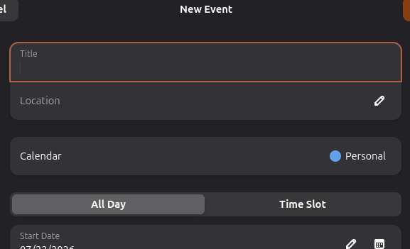
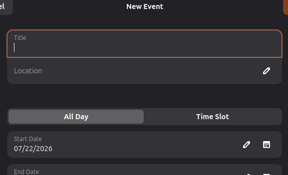
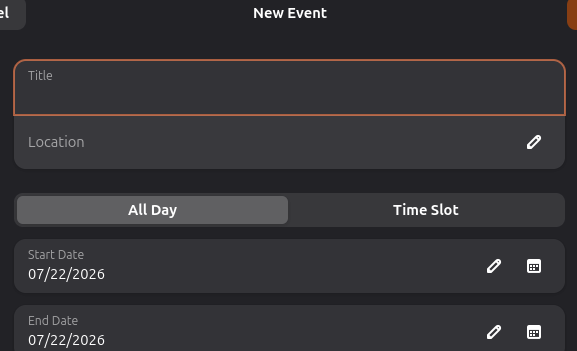
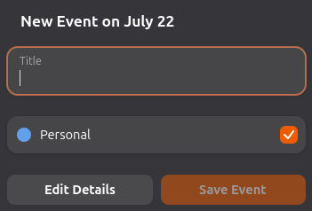
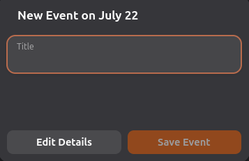
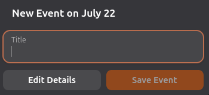

Das issues mencionadas anteriormente, a que eu acabei escolhendo foi como primeira contribuição foi a #1588. Apesar de ter iniciado com a #1574, decidi na aula de quarta que resolvê-la seria um pouco mais chato do que eu pensava inicialmente. Ainda assim, a ideia de aprender fazendo ela deu muito certo (especialmente com relação à arquitetura do calendário), facilitando a #1588. O problema proposto por essa issue é o seguinte: ao criar um novo evento ou editar um existente, o pop-up que aparece possui uma secção de "escolher calendário", para decidir em qual calendário o evento pertence. No entanto, se há apenas um calendário (por exemplo, o padrão), não há necessidade de mostrar esse widget (já que não há escolha). Assim, o objetivo aqui é removê-lo nesses casos.
Esse é o primeiro pop-up afetado pelo problema, definido no arquivo gcal-event-editor-dialog.c.

gcal_event_editor_dialog_present_event (...) é chamada toda vez o Event Editor é aberto.
Dentro dela há uma chamada para outra função, set_event (...). Essa segunda função dentre
outras coisas, esconde alguns dos widgets com base em algumas condições. Ora, parece o local perfeito para
a nossa mudança. Com base no restante do arquivo, concluí que a melhor forma de fazer isso seria:
GListModel *all_calendars e atribuir a ela a lista de calendários
do pop-up;
g_boolean has_multiple_calendars e atribuir a ela o valor
"tamanho de all_calendars > 1";
gtk_widget_set_visible para enconder a lista caso necessário (isto é, quando
há apenas um calendário de escrita).

gcal-event-editor-dialog.blp,
podemos dar um nome ao widget pai da lista. Isso nos permite acessá-lo pelo código. Agora, econdendo ele ao invés do filho, temos:

O segundo pop-up é o Quick Add (gcal-quick-add-popover.c), compartilhando do mesmo problema. Veja:

g_signal_connect_object (...)
para conectar a lista de calendários a um callback. Em específico, usamos o sinal "items-changed", que chama a
função sempre que a lista mudar. Encondendo a lista, vamos encontrar um problema muito similar ao anterior:

